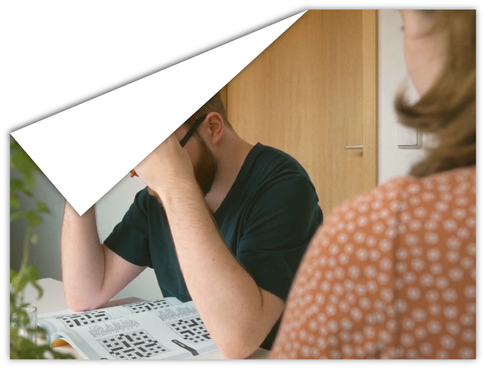
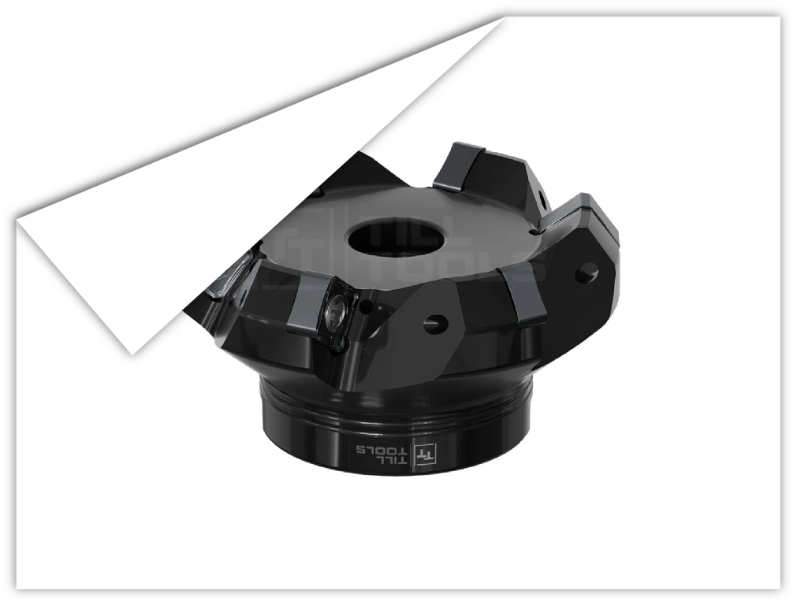
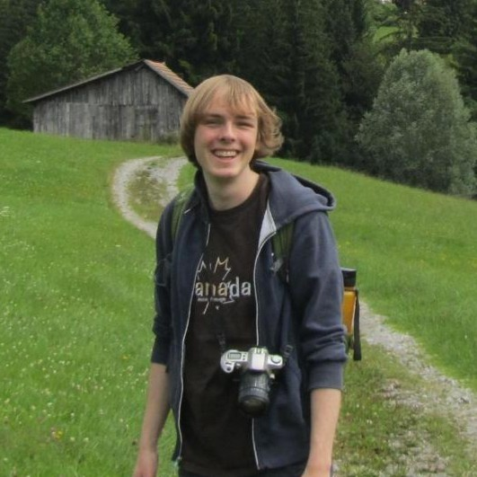
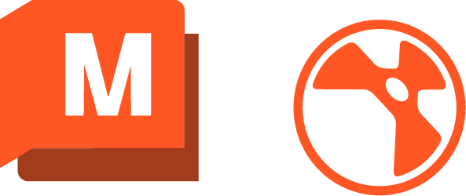

Projekte
Willkommen auf meinem Portfolio!
Hier findest du eine Auswahl meiner Arbeiten aus den Bereichen 3D und Film. Wenn du kreative Unterstützung für dein Projekt suchst, freue ich mich über deine Anfrage und helfe dir sehr gern weiter. Kontakt >
Diese ausgewählten Projekte sind entweder im Rahmen meines Studiums, für Kunden oder in meiner Freizeit entstanden.
Mit den orangenen Schaltflächen kann nach Themenbereich gefiltert werden.

Kamerahelm als Übung für 3D-Asset Prozess & Compositing
Solo Projekt, umgesetzt in Blender, Substance Painter & Photoshop, 2026.

Kurzfilm über einen Mann, welcher an dem letzten Wort eines Kreuzworträtsel scheitert und darauf all seine Probleme projiziert.
Gruppenarbeit für die Hochschule, Drehbuch, Regie, Schnitt von mir, 2024.

Nachbildung der Canon AE-1 als 3D Asset
Solo Projekt, umgesetzt in Blender, Substance Painter, Illustrator & Photoshop, 2025.

Imagevideo für die Medienstudiengänge der Hochschule Harz.
Gruppenarbeit für die Hochschule, Konzeption, Regie, Kamera, Schnitt, VFX u.a. von mir, 2026.

Kurze 3D Animation über einen Pinguinforscher der lieber Pinguin als Forscher ist.
Solo Projekt für die Hochschule, umgesetzt in Blender, 2025.

Serie von Produktrendern für einen Hersteller von Präzisionswerkzeugen.
Solo Projekt für Till Tools, umgesetzt in Blender, 2022-2024.
Über
mich

Hi, ich bin Thomas und schon immer habe ich mir
bei Filmen und anderen kreativen Projekten
gedacht: sowas muss ich auch machen, Dinge
kreieren, gestalten, erzählen.
Dieser Gedanke hat sich weiter verfestigt
als ich 2019 angefangen habe mir selbst 3D
Gestaltung in Blender beizubringen. Darauf
folgten zahlreiche weitere Gestaltungsbereiche und Programme. Zunächst rein aus Spaß
für persönliche Projekte und später freiberuflich für einige Kunden.
Momentan studiere ich den Bachelor Medieninformatik an der Hochschule Harz. Im Laufe
des Studiums habe ich zudem ein großes
Interesse an Film und Grafik Design entwickelt
und viel zu diesen Gebieten gelernt. Durch den
Studiengang habe ich in einer breiten Auswahl an Fachgebieten Kenntnisse gesammelt,
theoretisch und praktisch, gestalterisch und
technisch. Dort hatte ich auch die letzten drei
Semester die Möglichkeit in Tutorien (u.a. für
Mediengestaltung) mein Wissen mit anderen
Studierenden zu teilen. In den genannten
Bereichen und allem, was dazwischen liegt
möchte ich weiter Erfahrung sammeln und an
Projekten arbeiten.
Softwarekenntnisse:
Möchte ich noch lernen:

Hast du Fragen, Projekte bei denen ich dich unterstützen kann oder willst Kontakt aufbauen? Schreib mir einfach:
Schreib mir gerne eine Nachricht:
th.frtz@gmail.com
Oder finde mich hier: